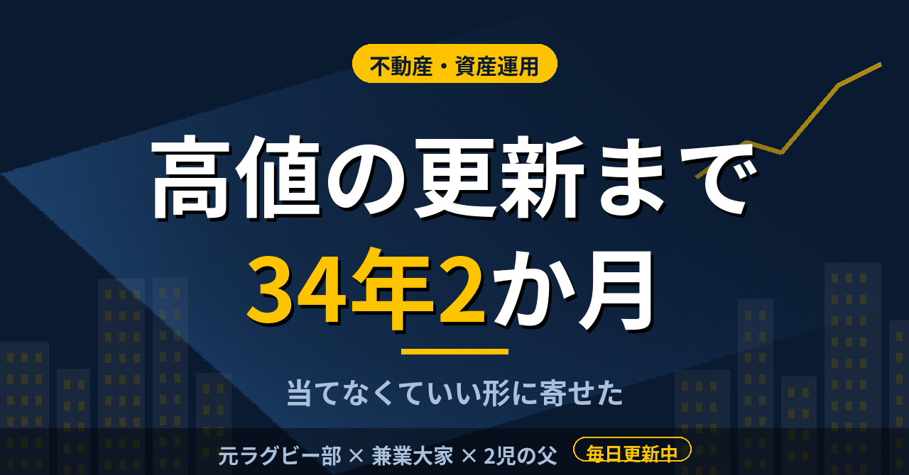

不動産・資産運用日経平均が高値を超えるまで34年2か月。個別株を一通り試した僕がETFに落ち着いた
個別株を買い、上がれば売りたくなり、下がれば迷う。そんな時期が、僕にはあった。今は米国株に連動するETFと、世界株の投資信託が中心で、売買の回数はずっと減った。そこに落ち着くまでに見た数字を、ひとつ書いておく。
高値の更新に、34年2か月かかった
日経平均株価の終値の最高値は、1989年12月29日の3万8915円87銭だった。日本経済新聞社の解説によると、この水準を上回ったのは2024年2月22日で、この日に3万9098円台を付けている。1989年12月から約34年2か月、「34年ぶり」と伝えられた更新である。いま2歳の子どもが、30代半ばになるまでの長さだ。
ここで見ているのは株価指数の水準で、配当などは含まない。それでも、指数そのものを持っていても、天井で買えばこれだけ待たされた事実は変わらない。天井も底も当て続けるのは難しいと言われるのは知っていたが、数字で見ると言葉の重さが違った。
待つこと自体が悪いわけではない。ただ、待つ間に別の資産や時間を使えなかったことは、数字には出てこない。僕が株から不動産へ比重を移したのは、同じ資金で何を待つのかを比べたことが理由のひとつだった。
一通り試して、当てられないと分かった
僕は個別株を一通り試した。上がりそうな銘柄を探して買い、上がれば売りたくなり、下がれば売る機会を逃した。FXではトルコリラのスワップポイントを狙い、仮想通貨では草コインにも触った。
「頭と尻尾は取れない」という言葉は、読んだだけのときは分かった気になっていた。自分の売買を繰り返して、同じところで迷う自分を見てから、ようやく腹に落ちた。株で年15％を出し続けられるとは思っていない。現実的には年4〜5％というのが、僕の見立てだ。
基準を後から変えると、前の結果とは比べられなくなり、何が効いたのかも分からなくなる。上がった理由も下がった理由も、売買のあとで説明をつけることはできた。ただ、その説明が次の売買で役に立った記憶は、あまりない。不動産に軸足を移したときも、比べた相手は株式の期待リターンだった。CCR（自己資金回収率）が15％程度あれば、株で年15％を回すよりトータルで良いと考え、そこを基準に置いた。
売買を減らす道具として、枠を使う
金融庁の資料によると、新NISAの年間投資枠は、つみたて投資枠が120万円、成長投資枠が240万円で、合わせて年360万円。非課税で保有できる限度額は1,800万円で、そのうち成長投資枠は1,200万円までだ。
枠に上限があることは、僕にとっては制約というより助けになっている。積立NISAや国債は動かさない資産と決めていて、売るかどうかを悩む対象が減る。判断の回数が減れば、迷って外す回数も減る。毎月決まった額を入れるだけの仕組みは、相場のニュースを見て気持ちが揺れる日でも、手を動かす場面をほとんど作らない。
天井も底も当てられないなら、当てなくていい形に寄せる。それが今の僕の整理で、誰かに勧める話ではない。迷う回数を減らせたことだけは、はっきり言える。
この記事は note にも掲載しています。